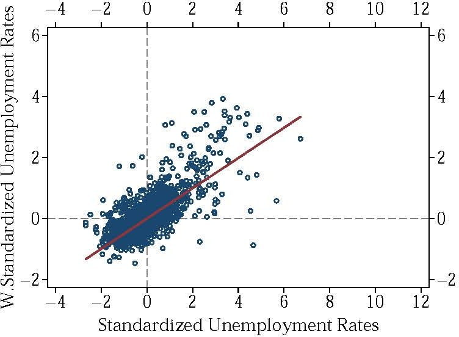
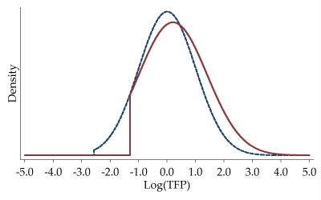
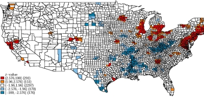

SOFTWARE
TABLE OF CONTENTS
Stata
SPGEN: Stata module to generate spatially lagged variables
Statistical Software Components S458105, Boston College Department of Economics.
RePEc
GitHub
MORANSI: Stata module to compute Moran's I
Statistical Software Components S458473, Boston College Department of Economics.
RePEc
GitHub

ESTQUANT: Stata module to implement Quantile approach by Combes et al. (2012)
Statistical Software Components S458343, Boston College Department of Economics.
RePEc
GitHub

GETISORD: Stata module for hot and cold spot analysis by Getis-Ord G*i(d)
Stata Journal, 16(3), pp. 613-631. DOI: 10.1177/1536867X1601600304
Article
GitHub
